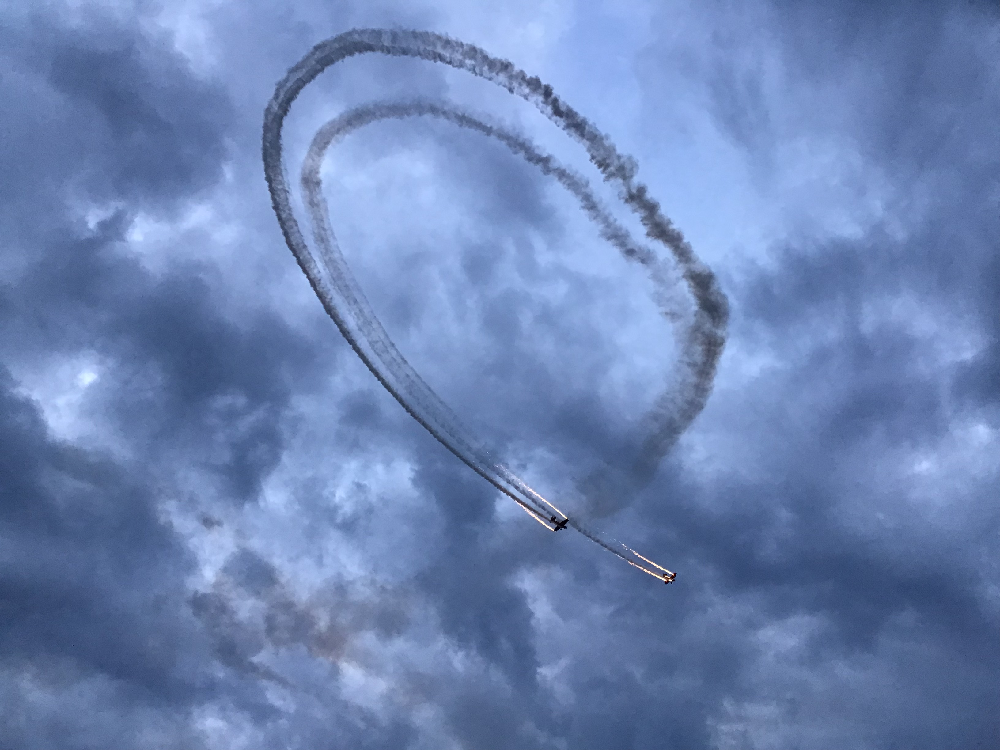
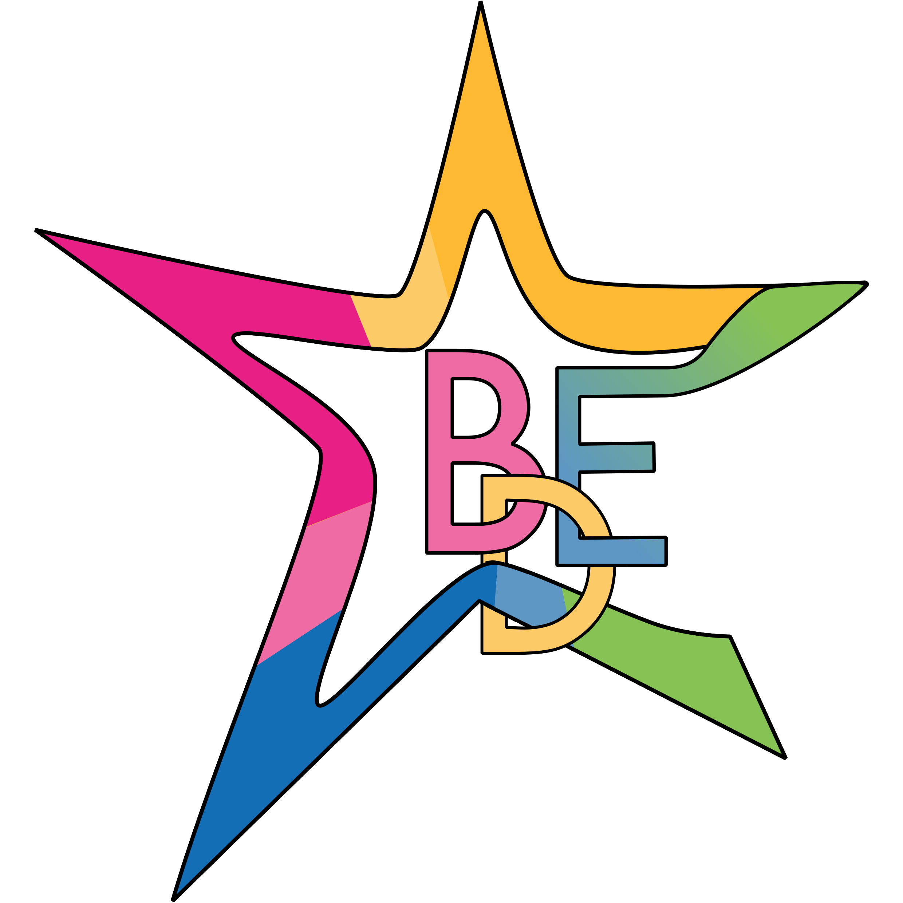

A new way to the stars !
Vous trouverez ici, bientôt, un texte passionant qui vous permettra de comprendre tout sur la Propulsion Hybride dans le domaine du Spatial. Nous découperons le texte en trois mouvements pour mieux nous repérer lors de cette analyse. Le premier mouvement, allant du début du texte à la ligne 13, mettant en place le dialogue entre les deux personnages à propos des relations conjugales. Dans un deuxième mouvement, des lignes 13 à 28, nous verrons une critique de l’organisation naturelle entre les sexes dans un discours. Finalement, nous nous pencherons sur le troisième mouvement dans lequel Mme La Maréchale défend l’égalité intellectuelle à travers un exemple.
Vous trouverez ici, bientôt, un texte passionant qui vous permettra de comprendre tout sur la Propulsion Hybride dans le domaine du Spatial. Nous découperons le texte en trois mouvements pour mieux nous repérer lors de cette analyse. Le premier mouvement, allant du début du texte à la ligne 13, mettant en place le dialogue entre les deux personnages à propos des relations conjugales. Dans un deuxième mouvement, des lignes 13 à 28, nous verrons une critique de l’organisation naturelle entre les sexes dans un discours. Finalement, nous nous pencherons sur le troisième mouvement dans lequel Mme La Maréchale défend l’égalité intellectuelle à travers un exemple.
